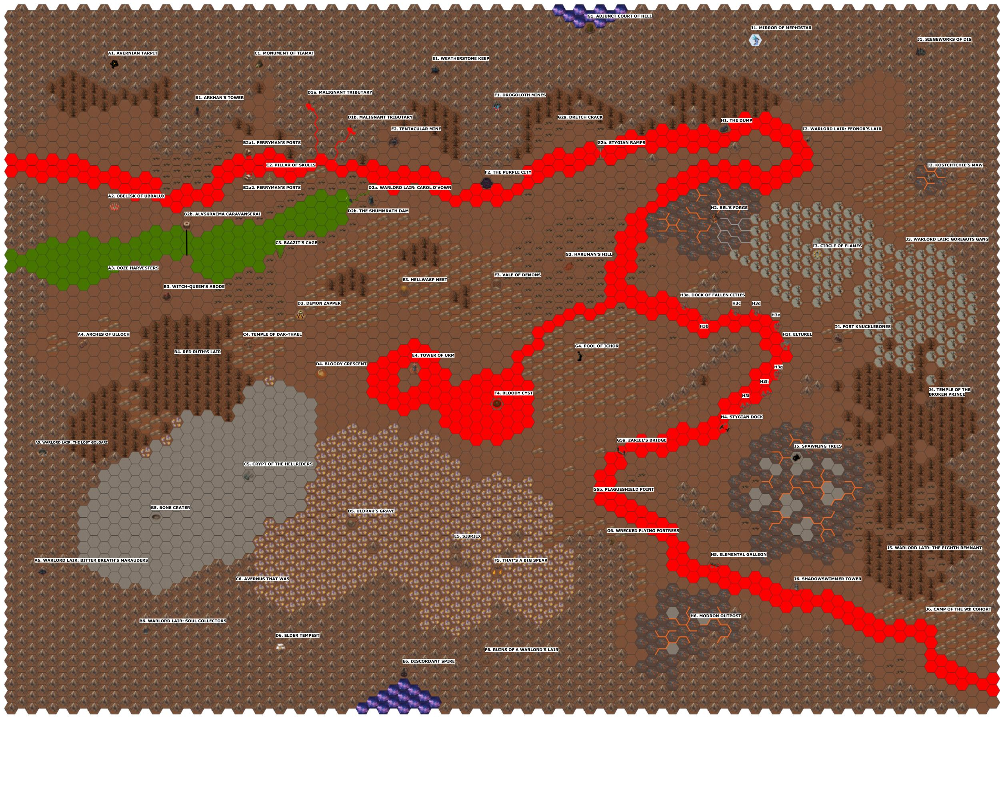

RPG DESIGN · SYSTEMS DESIGN · UNREAL
Worlds to explore.
Choices that matter.
I'm Guilherme, a software engineer building RPG experiences through tabletop design and Unreal prototypes.
My work connects player motivations, reactive encounters, and the systems behind exploration.
Explore my work
Terrain, routes, and places worth discovering.
SELECTED WORK
Two worlds. Different design challenges.
01 — AVERNUS
Personal stakes.
A world in crisis.
Campaign adaptation connecting character stories, quest interactions, and systemic exploration.
Explore Avernus02 — STORMWRECK
Exploration built
around decisions.
Travel, terrain hazards, and narrative encounters. An exploration design project with an Unreal prototype in development.
Explore StormwreckFrom tabletop rules to a playable prototype.
DESIGN MEETS IMPLEMENTATION
A technical foundation.
A focus on player experience.
My background is in professional software engineering, including C#, architecture, integrations, and technical leadership.
I bring that experience to RPG design: structuring interconnected content, defining gameplay rules, and learning through implementation in Unreal Engine.
View GitHubLET'S TALK